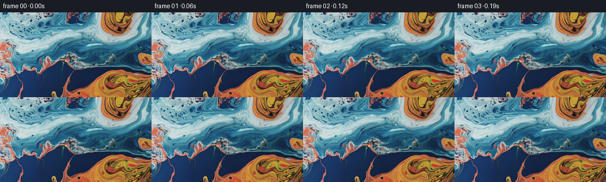

候选 01 · 2026-11-09T02:24:00.338725+00:00 · 点开播放与检查图
inspection.png

transition_check.png

代码变化
--- 上一保存版本
+++ 本次保存版本
@@ -0,0 +1,103 @@
+"""Advect the supplied pigment photograph and render a slow upward camera tilt."""
+from pathlib import Path
+import numpy as np
+from PIL import Image
+from artifact_io import save
+
+ROOT = Path(__file__).resolve().parent
+
+
+def reflect(a, n):
+ a = np.mod(a, 2 * (n - 1))
+ return np.where(a <= n - 1, a, 2 * (n - 1) - a)
+
+
+def cubic_weight(x):
+ x = np.abs(x)
+ return np.where(x < 1, 1.5*x**3 - 2.5*x*x + 1,
+ np.where(x < 2, -.5*x**3 + 2.5*x*x - 4*x + 2, 0))
+
+
+def sample(image, x, y):
+ """Cubic resampling, using flowing reflected pigment beyond the photograph."""
+ # The very narrow region revealed above the original photograph completes
+ # its cropped paint pools, with a curved shear rather than a rigid mirror.
+ outside = np.maximum(-y, 0)
+ x = x + .24*outside + 2.8*np.sin(outside/18.)
+ y = np.where(y < 0, outside*.88, y)
+ x = reflect(x, image.shape[1])
+ y = reflect(y, image.shape[0])
+ ix = np.floor(x).astype(np.int32)
+ iy = np.floor(y).astype(np.int32)
+ out = np.zeros((*x.shape, 3), np.float32)
+ for j in range(-1, 3):
+ wy = cubic_weight(y - (iy + j))
+ sy = np.clip(iy+j, 0, image.shape[0]-1)
+ for i in range(-1, 3):
+ w = wy * cubic_weight(x - (ix+i))
+ sx = np.clip(ix+i, 0, image.shape[1]-1)
+ out += image[sy, sx] * w[..., None]
+ return out
+
+
+def flow(x, y, time):
+ """Smooth divergence-free eddies in a slowly shearing stream of paint."""
+ vx = np.zeros_like(x)
+ vy = np.zeros_like(y)
+ # Gaussian stream-function eddies: (centre x, centre y, radius, strength).
+ for cx, cy, r, omega in [
+ (194., 6., 31., -.100),
+ (208., 120., 39., .083),
+ (119., 63., 61., -.040),
+ (20., 91., 27., .053),
+ (111., -4., 26., .042),
+ ]:
+ dx, dy = x-cx, y-cy
+ g = np.exp(-(dx*dx + dy*dy)/(2*r*r))
+ vx += -omega*dy*g
+ vy += omega*dx*g
+ # Wide gentle horizontal stream following the blue veins.
+ vx += 1.05*np.exp(-((y-48)/38)**2) - .24
+ # A low-amplitude moving streamfunction folds adjacent coloured bands.
+ phase_x = x/52. + .12*time
+ phase_y = y/38. - .1*time
+ vx += .42*np.sin(phase_x)*np.cos(phase_y)
+ vy -= .42*(38./52.)*np.cos(phase_x)*np.sin(phase_y)
+ return vx, vy
+
+
+def make_frames():
+ image = np.asarray(Image.open(ROOT/'first_frame.png').convert('RGB'), dtype=np.float32)
+ h, w = image.shape[:2]
+ yy, xx = np.mgrid[:h, :w].astype(np.float32)
+ frames = [image.astype(np.uint8)]
+ for frame in range(1, 81):
+ time = frame/16.
+ u = frame/80.
+ # Continuous upward tilt. The image descends and the lower orange pool
+ # leaves the view while the blue/orange pigments above enter it.
+ ease = u*u*(3-2*u)
+ upward = 25.0*(.70*u + .30*ease)
+ zoom = 1.0 + .035*ease
+ x = (xx-127.5)/zoom + 127.5 + .9*ease
+ y = (yy-71.5)/zoom + 71.5 - upward
+ # Trace pixel trajectories backward through the smooth liquid velocity.
+ steps = max(1, int(np.ceil(time/.10)))
+ dt = time/steps
+ for j in range(steps):
+ t = time-j*dt
+ vx, vy = flow(x, y, t)
+ mx, my = x-.5*dt*vx, y-.5*dt*vy
+ vx, vy = flow(mx, my, t-.5*dt)
+ x -= dt*vx
+ y -= dt*vy
+ rgb = sample(image, x, y)
+ frames.append(np.clip(np.rint(rgb), 0, 255).astype(np.uint8))
+ return np.stack(frames)
+
+
+if __name__ == '__main__':
+ frames = make_frames()
+ save(frames, ROOT)
+ assert np.array_equal(frames[0], np.asarray(Image.open(ROOT/'first_frame.png').convert('RGB')))
+ print('Saved', frames.shape, frames.dtype)
命令 4 · 2026-11-09T02:23:56.727579+00:00/bin/bash -lc "cat > generate.py <<'PY'
\"\"\"Advect the supplied pigment photograph and render a slow upward camera tilt.\"\"\"
from pathlib import Path
import numpy as np
from PIL import Image
from artifact_io import save
ROOT = Path(__file__).resolve().parent
def reflect(a, n):
a = np.mod(a, 2 * (n - 1))
return np.where(a <= n - 1, a, 2 * (n - 1) - a)
def cubic_weight(x):
x = np.abs(x)
return np.where(x < 1, 1.5*x**3 - 2.5*x*x + 1,
np.where(x < 2, -.5*x**3 + 2.5*x*x - 4*x + 2, 0))
def sample(image, x, y):
\"\"\"Cubic resampling, using flowing reflected pigment beyond the photograph.\"\"\"
# The very narrow region revealed above the original photograph completes
# its cropped paint pools, with a curved shear rather than a rigid mirror.
outside = np.maximum(-y, 0)
x = x + .24*outside + 2.8*np.sin(outside/18.)
y = np.where(y < 0, outside*.88, y)
x = reflect(x, image.shape[1])
y = reflect(y, image.shape[0])
ix = np.floor(x).astype(np.int32)
iy = np.floor(y).astype(np.int32)
out = np.zeros((*x.shape, 3), np.float32)
for j in range(-1, 3):
wy = cubic_weight(y - (iy + j))
sy = np.clip(iy+j, 0, image.shape[0]-1)
for i in range(-1, 3):
w = wy * cubic_weight(x - (ix+i))
sx = np.clip(ix+i, 0, image.shape[1]-1)
out += image[sy, sx] * w[..., None]
return out
def flow(x, y, time):
\"\"\"Smooth divergence-free eddies in a slowly shearing stream of paint.\"\"\"
vx = np.zeros_like(x)
vy = np.zeros_like(y)
# Gaussian stream-function eddies: (centre x, centre y, radius, strength).
for cx, cy, r, omega in [
(194., 6., 31., -.100),
(208., 120., 39., .083),
(119., 63., 61., -.040),
(20., 91., 27., .053),
(111., -4., 26., .042),
]:
dx, dy = x-cx, y-cy
g = np.exp(-(dx*dx + dy*dy)/(2*r*r))
vx += -omega*dy*g
vy += omega*dx*g
# Wide gentle horizontal stream following the blue veins.
vx += 1.05*np.exp(-((y-48)/38)**2) - .24
# A low-amplitude moving streamfunction folds adjacent coloured bands.
phase_x = x/52. + .12*time
phase_y = y/38. - .1*time
vx += .42*np.sin(phase_x)*np.cos(phase_y)
vy -= .42*(38./52.)*np.cos(phase_x)*np.sin(phase_y)
return vx, vy
def make_frames():
image = np.asarray(Image.open(ROOT/'first_frame.png').convert('RGB'), dtype=np.float32)
h, w = image.shape[:2]
yy, xx = np.mgrid[:h, :w].astype(np.float32)
frames = [image.astype(np.uint8)]
for frame in range(1, 81):
time = frame/16.
u = frame/80.
# Continuous upward tilt. The image descends and the lower orange pool
# leaves the view while the blue/orange pigments above enter it.
ease = u*u*(3-2*u)
upward = 25.0*(.70*u + .30*ease)
zoom = 1.0 + .035*ease
x = (xx-127.5)/zoom + 127.5 + .9*ease
y = (yy-71.5)/zoom + 71.5 - upward
# Trace pixel trajectories backward through the smooth liquid velocity.
steps = max(1, int(np.ceil(time/.10)))
dt = time/steps
for j in range(steps):
t = time-j*dt
vx, vy = flow(x, y, t)
mx, my = x-.5*dt*vx, y-.5*dt*vy
vx, vy = flow(mx, my, t-.5*dt)
x -= dt*vx
y -= dt*vy
rgb = sample(image, x, y)
frames.append(np.clip(np.rint(rgb), 0, 255).astype(np.uint8))
return np.stack(frames)
if __name__ == '__main__':
frames = make_frames()
save(frames, ROOT)
assert np.array_equal(frames[0], np.asarray(Image.open(ROOT/'first_frame.png').convert('RGB')))
print('Saved', frames.shape, frames.dtype)
PY
python generate.py"exit 0 命令 5 · 2026-11-09T02:24:27.997937+00:00/bin/bash -lc "command -v ffmpeg && ffmpeg -hide_banner -loglevel error -y -framerate 16 -i frames/%02d.png -c:v libx264 -crf 16 -pix_fmt yuv420p -movflags +faststart video.mp4 && python - <<'PY'
import numpy as np
from PIL import Image
p=np.load('pixels.npz')['pixels']
im=np.asarray(Image.open('first_frame.png').convert('RGB')).astype(np.uint32)
original=(im[:,:,0]<<16)|(im[:,:,1]<<8)|im[:,:,2]
assert p.shape==(144,256,81)
assert np.array_equal(p[:,:,0],original)
print('Validated 81 frames and exact first frame.')
PY"exit 1 命令 6 · 2026-11-09T02:24:37.692465+00:00/bin/bash -lc "python - <<'PY'
import importlib.util
import numpy as np
from PIL import Image
p=np.load('pixels.npz')['pixels']
im=np.asarray(Image.open('first_frame.png').convert('RGB')).astype(np.uint32)
original=(im[:,:,0]<<16)|(im[:,:,1]<<8)|im[:,:,2]
assert p.shape==(144,256,81)
assert np.array_equal(p[:,:,0],original)
print('Validated 81 frames and exact first frame.')
print('imageio_ffmpeg:',bool(importlib.util.find_spec('imageio_ffmpeg')))
PY"exit 0 命令 7 · 2026-11-09T02:24:47.550534+00:00/bin/bash -lc "python - <<'PY'
import imageio_ffmpeg
from PIL import Image
import numpy as np
writer=imageio_ffmpeg.write_frames('video.mp4',(256,144),fps=16,codec='libx264',pix_fmt_in='rgb24',pix_fmt_out='yuv420p',quality=9,macro_block_size=1,output_params=['-movflags','+faststart'])
writer.send(None)
for k in range(81):
writer.send(np.asarray(Image.open(f'frames/{k:02d}.png').convert('RGB')))
writer.close()
PY"exit 0